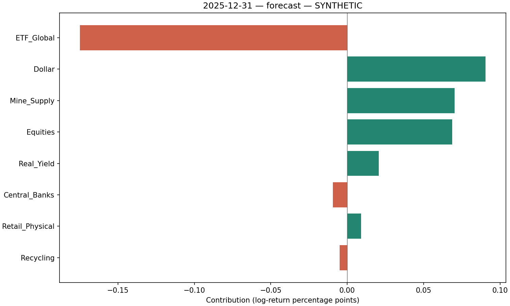
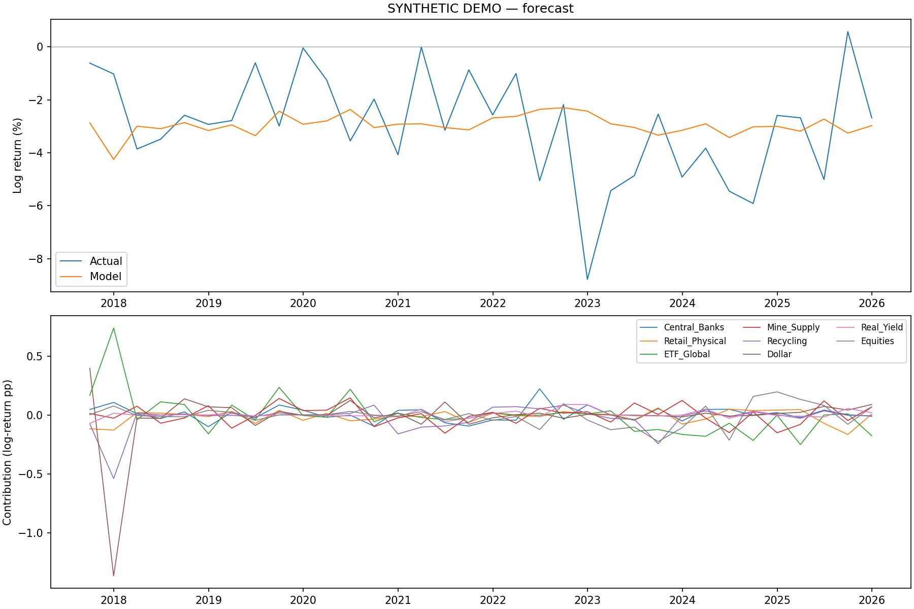

Target: gold_price. Gold-price return in log percentage points.
This report uses generated synthetic data. No current market or investor claim is implied. Contributions describe statistical associations relative to historical means, not independently identified buying pressure or causal effects. Forecast inputs use publication cutoffs; strict vintage checks are enabled. All additive values are log-return percentage points. GLD holdings are a single-fund demand proxy, not global ETF or retail demand.
| group | contribution_log_return_pp | force_score | contribution_ci_low_pp | contribution_ci_high_pp | bootstrap_probability_positive | iterations |
|---|---|---|---|---|---|---|
| ETF_Global | -0.1749 | -38.9675 | -0.2945 | 0.0962 | 0.09 | 100 |
| Dollar | 0.0906 | 20.1815 | 0.0511 | 0.1685 | 1.00 | 100 |
| Mine_Supply | 0.0704 | 15.6785 | -0.0799 | 0.3009 | 0.83 | 100 |
| Equities | 0.0687 | 15.3070 | 0.0025 | 0.1681 | 0.97 | 100 |
| Real_Yield | 0.0208 | 4.6305 | -0.0420 | 0.0780 | 0.68 | 100 |
| Central_Banks | -0.0094 | -2.0910 | -0.0384 | 0.0269 | 0.21 | 100 |
| Retail_Physical | 0.0091 | 2.0282 | -0.0887 | 0.0805 | 0.42 | 100 |
| Recycling | -0.0050 | -1.1158 | -0.0490 | 0.0425 | 0.61 | 100 |

| component | log_return_pp |
|---|---|
| intercept | -3.0439 |
| sum of driver contributions | 0.0702 |
| predicted | -2.9736 |
| unexplained residual | 0.2945 |
| actual | -2.6791 |
{
"n": 34,
"mae_log_return_pp": 1.6114021810839902,
"rmse_log_return_pp": 2.09975232052121,
"r2": -0.1327835622735869,
"skill_vs_rolling_mean": -0.07514128025539746,
"skill_vs_zero": 0.6518438534243912,
"direction_accuracy": 0.9705882352941176,
"mean_residual_pp": -0.008270676224596266,
"label": "release_aligned_research_forecast"
}

OLS-HAC is a separate full-sample diagnostic, not significance testing of rolling Ridge coefficients. Collinear positions can make allocations unstable.
| coef_z | hac_se | z_stat | p_value | ci_low | ci_high | q_value_bh | |
|---|---|---|---|---|---|---|---|
| const | -3.07742 | 0.20682 | -14.87970 | 0.00000 | -3.48278 | -2.67206 | NaN |
| central_banks_yoy | -0.16544 | 0.25478 | -0.64933 | 0.51613 | -0.66480 | 0.33393 | 0.93067 |
| retail_yoy | 0.13205 | 0.25477 | 0.51829 | 0.60426 | -0.36730 | 0.63140 | 0.93067 |
| etf_demand | 0.52008 | 0.28047 | 1.85435 | 0.06369 | -0.02962 | 1.06978 | 0.50951 |
| mine_yoy | 0.04411 | 0.23905 | 0.18452 | 0.85361 | -0.42443 | 0.51265 | 0.93067 |
| recycling_yoy | -0.07176 | 0.21743 | -0.33006 | 0.74135 | -0.49792 | 0.35439 | 0.93067 |
| dollar_return | 0.01975 | 0.22694 | 0.08701 | 0.93067 | -0.42505 | 0.46454 | 0.93067 |
| real_yield_change | 0.11786 | 0.20414 | 0.57732 | 0.56372 | -0.28225 | 0.51797 | 0.93067 |
| stocks_return | 0.29224 | 0.24014 | 1.21698 | 0.22361 | -0.17842 | 0.76290 | 0.89444 |
{
"n": 58,
"condition_number": 1.9501597303345937,
"breusch_pagan_p": 0.6469159196481968,
"ljung_box_p": 0.49887827880560054,
"omitted_constant_features": [],
"inference": "Descriptive full-sample OLS with HAC; does not validate causality or ridge attributions"
}
CSV files include the full contributions, scaler parameters, raw-unit coefficients and availability audit.